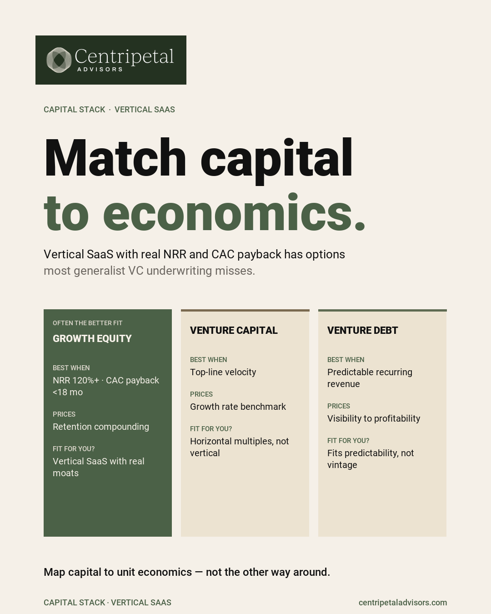

After the Raise, Capital Structure Becomes an Operating Decision
After an equity raise, venture debt is not a default next step. It is a capital structure decision with operating implications. The check has cleared, the press release is out, and the team is ready to deploy. At this point, founders often hear from lenders. The pitch is compelling: extend your runway, reduce dilution, accelerate growth. But venture debt is not free money. It comes with covenants, reporting obligations, and repayment mechanics that interact with the company's operations in ways that are not always obvious from the term sheet.
Cash Visibility
The first question is whether the company has the cash-flow visibility to support a debt obligation. Equity has no repayment schedule. Debt does. If the company's cash forecasting is not reliable enough to project debt service alongside operating expenses, the debt creates risk that outweighs the benefit.
Strong cash visibility means knowing, with reasonable precision, what the cash balance will be 6-12 months from now under multiple scenarios.
Covenant Mechanics
Venture debt typically comes with covenants: minimum cash balances, revenue milestones, reporting requirements. These are not decorative. A covenant breach triggers consequences that can range from increased reporting to acceleration of the loan.
Before signing, the company should model each covenant against its operating plan and downside scenarios. If a reasonable downside case triggers a breach, the terms need to be renegotiated or the debt should not be taken.
Sequencing
The timing of debt relative to equity matters. Debt taken immediately after an equity raise, when the balance sheet is strongest, typically gets better terms. Debt taken when the company is running low on cash and needs to bridge to the next round gets worse terms and signals distress.
The best time to negotiate debt is when you do not need it urgently.
Operating Needs vs. Headline Dilution
The decision to use debt should be driven by a specific operating need: a piece of equipment, an inventory purchase, a bridge to a known revenue milestone. "Reducing dilution" is not an operating need.
If the use of proceeds is vague, the debt is likely to create more problems than the dilution it avoids.
Capital structure is not a one-time decision made at closing. It is an ongoing operating decision that affects the company's flexibility, risk profile, and fundability. Treat it with the same rigor as any other strategic choice.

Frequently Asked Questions
Should a Seed or Series A SaaS company add venture debt after raising equity?
Only if the use of proceeds is clear, the cash-flow visibility supports covenant compliance, and the debt does not create an obligation the company cannot service in a downside case.
What should founders evaluate before taking venture debt?
Cash runway with and without the debt, covenant mechanics, reporting obligations, the lender's track record with early-stage companies, and whether the capital accelerates a specific operating milestone.
How does capital structure affect the next fundraise?
Existing debt, warrant coverage, and covenant obligations are part of the investor's diligence. Clean capital structure with clear use-of-proceeds history is more fundable than maximum leverage with unclear deployment.
Evaluating your capital structure?
Schedule a Conversation